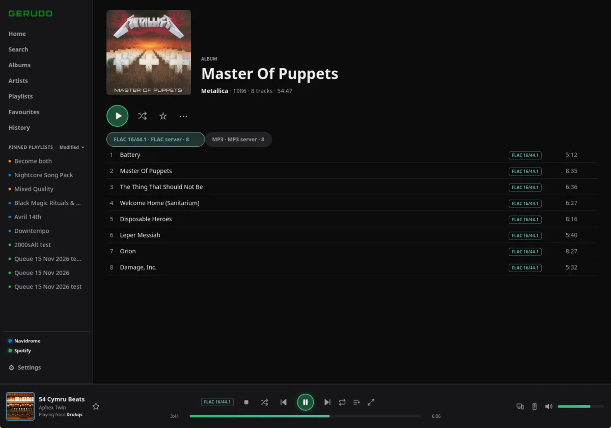
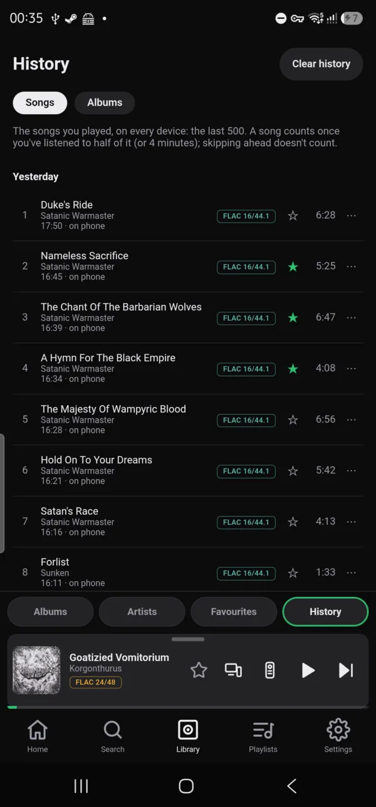

A music player for your own collection
Your music.
Played exactly
as recorded.
Gerudo plays your own FLAC library and Spotify from one place, on your computer and on your phone, and sends every file to your speakers untouched.


Why it exists
Your music collection stays private.
Your listening stays personal.
A carefully ripped collection deserves better than being squeezed through whatever a player decides. Gerudo puts your own server, your Spotify account and your devices in one app, and keeps out of the way of the sound. No browser in the playback chain, no cloud account of its own, nothing sold or tracked.

Search everything at once
Your servers and Spotify answer side by side, each in its own group, so you always know where a song comes from.

See what you're hearing
Codec, sample rate, bit depth and bitrate for every song, and what actually reaches the output, measured, not guessed.

Pick up where you left off
Move the music from computer to phone and back in one tap: same queue, same song, same second.
On the computer
A living-room player on your desk.
Click the cover and Gerudo fills the window: the artwork large, the album beside it with the playing song marked, the queue one tab away.
- Playing fromAlways shows the album or playlist the music came from, with a link back. It even survives moving to the phone.
- Your desktop, not a browserMedia keys, the KDE widget and the tray icon control it, and it keeps playing with the window closed.
- Volume that works low downEvery step of the slider makes a difference, with fine control at the quiet end where late-night listening happens.
- Mixed playlistsYour own songs and Spotify songs in one playlist, kept on your own hub and the same on every device.

More than one library
The FLAC version and the MP3 you never replaced. Together.
Connect several music servers at once: a main one and extensions. Gerudo shows an album you have on both only once, with a tab per version, the best quality first.
- Include or leave outEach server has its own switches for Search, Albums and Artists. Hide the MP3s from browsing without losing them from your playlists.
- Versions, side by side24/96 and 16/44.1, or FLAC and MP3: pick the tab, and "Playing from" follows the copy you chose.
- Playlists that grow upAdd a song from another server or Spotify to a playlist and Gerudo offers to make it a mixed playlist, keeping every song.



Remembers honestly
A history of what you actually listened to.
A song only counts once you've heard half of it. Skipping ahead doesn't count. The last 500 plays, from every device, grouped by day, each one saying where it played.
- Recently playedAlbums and the playlists you played from, shared between phone and computer.
- Favourites and play countsStars and scrobbles go straight back to your own server.
- Ignore a songSkip that one track you never want when an album or playlist plays, on every device.
The two things it does best
Look closer.
Bit-perfect, and it can prove it.
Each song reaches your DAC at its own sample rate, and Gerudo shows you, honestly, when anything is in the way.
See the signal chain → EverywhereOne library. Two screens. No cloud.
Phone and computer stay in step through a small hub at home, and a new computer joins by scanning one code.
See how they talk →